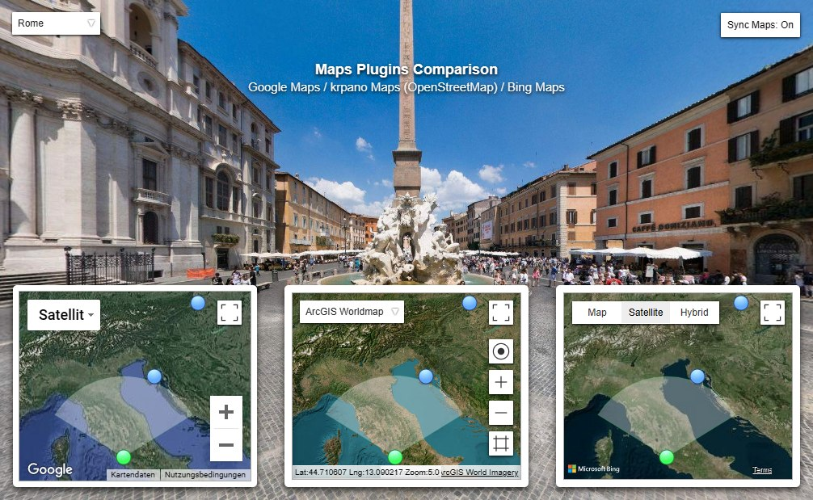
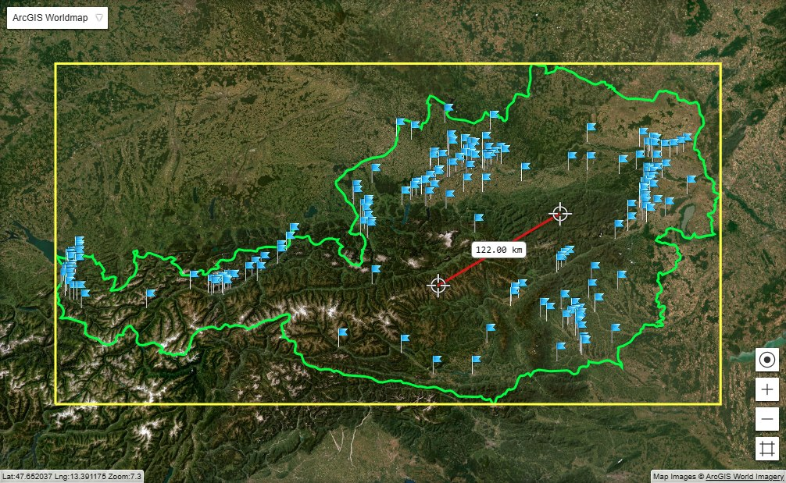

Javascript must be activated for this page!
krpano Maps Plugin
krpanomaps.xml
A krpano-based Maps Plugin using Open Street Map images (and others).
Compatible to the Google Maps and Bing Maps Plugins and can be used a direct replacement.
As krpano-based, open-source xml-only plugin, it allows way more customizing and is more flexible,
e.g. use any kind of krpano hotspots or krpano layers on the map.
Plugin documentation topics:
Type Default value
lat lng
Number
0.0
Latitude and Longitude in degrees.
The geographic coordinates of the current map center position.
Type Default value
zoom Number
0.0
Set the zoom level of the map.
From 0.0 to 20.0, continuously.
Type Default value
tileprovider String
"openstreetmaps"
Select the tile-provider for the maps images.
A tile-provider can be defined in the xml by a <krpanomaps_tileprovider> element.
See the krpanomaps.xml for details.
Type Default value
zoombase String
"screen"
Should the zoom be relative to the actual screen-pixels or to the layer size.
Available options:
screen
The zoom of the map is relative to the actual pixels of the screen and the pixel of the map-images.
Changing the layer or viewer size, will not change the zoom-level, but the visible area.
layer
Here the zoom is relative to the size of the map layer element.
When changing the layer size, the visible part of the map will be kept the same.
Type Default value
controls String
...
Select which default controls/elements should be visible on the map.
The setting can contains several Strings combined by | characters.
Available options:
zoom - zoom-in and zoom-out buttons.zoomarea - a button to zoom-out to see all map-spots.geolocation - a button to zoom and move to the current users geo-location.location - a textfield to see the current lat/lng coordinates.maptype - a selectbox to change the maptype.mapshadow - add a slight shadow on the map border.
The default is: zoom|zoomarea|geolocation|location|maptype
Type Default value
gesturerotation Boolean
false
Allow rotating the map using multi-touch gestures.
Type Default value
activespotenabled Boolean
false
Should the current active spot be enabeld?
That means - should the active spot react to click or over events.
Type Default value
onmapmoved onmapzoomed
Event
Events that will be called when the map was moved or zoomed.
Type Default value
onmapready Event
This event will be called when the krpano Maps Plugin is ready for usage.
addlayer(name) addhotspot(name, ismapspot) getbounds(pnts, areascale) fitbounds(pnts, areascale, instant) panto(lat, lng, zoom, mode, time, tweentype, donecallback) distance(lat1, lng1, lat2, lng2, unit) maptolayer(lat, lng) layertomap(x, y)
l = layer[map].addlayer(name )
Add a krpano <layer> element with the given name.
The name is optional, when not set or set to "auto" an automatic one will be chosen.
hs = layer[map].addhotspot(name, ismapspot )
Add a krpano <hotspot> element with the given name.
The name is optional, when not set or set to "auto" an automatic one will be chosen.
ismapspot - define if that hotspot is a 'map spot' (true by default),
that means if that hotspot should be included in a getbounds() check.
Extra hotspot features:
lat, lng - the hotspot is extended with lat and lng properties,
that will automatically get mapped to ath, atv values (and inverse).
For defining a polygonal hotspots ,
the <point> objects are also extended with lat, lng properties.
mappoints - polygonal hotspots
can also have a mappoints="lat,lng,lat,lng,..." setting for defining
a list of map points.
dragable, ondrag - the hotspot has a dragable setting that can be set to true
to make the hotspot automatically dragable.
When getting dragged, an ondrag event is triggered.
zoomlevelbase - for hotspots with zoom=true this
defines the scale-reference zoom-level .
zoomlevelmin, zoomlevelmax - define zoom levels,
where the zoom scaling starts or ends.
bounds = layer[map].getbounds(pnts, areascale )
Get the boundaries of several lat, lng coordinates.
Parameters:
pnts -
either null to use all 'map spots' (hotspots created with ismapspot=true ),
an Array of Objects with {lat,lng} properties.
areascale - scale the boundary by this factor, 1.5 by default.
Returns an Object with the following properties:
count - the number of map spots.minlat , maxlat , minlng , maxlng - the lat/lng boundaries to cover all map spots.centerlat , centerlng - the lat/lng center of the boundary.zoom - the map zoom level required to see all map spots at once.
layer[map].fitbounds(pnts, areascale, time, donecallback )
Pan and zoom the map to fit the boundary of several lat, lng coordinates.
Parameters:
pnts -
either null to use all 'map spots' (hotspots created with ismapspot=true ),
an Array of Objects with {lat,lng} properties.
areascale - Scale the boundary by this factor, 1.5 by default.
time -
The time for the panto() animation (0.5 by default).
When set to 0, the map's position and zoom level will be instantly changed.
donecallback - the callback when the change (and optionally also the panto() motion) is done.
layer[map].panto(lat, lng, zoom, mode, time, tweentype, donecallback )
Pan to the given coordinates and zoom level.
Parameters:
lat , lng - the target coordinates.zoom - the target zoom level.mode
auto (the default) - do a multi-step animation with zooming-out and zooming-in.
In this mode, the total time may be longer depending on the zoom-levels and distances.
direct - pan directly to the given target and zoom level.
time - the time in seconds for moving to the target (0.5 by default).tweentype - the motion curve, see tweentype ("smoother" by default).donecallback - the callback when the motion is done.
layer[map].distance(lat1, lng1, lat2, lng2, unit )
Get the distance between two coordinates.
Parameters:
lat1 , lng1 , lat2 , lng2 - the two coordinates.unit - the unit of the distance
deg (the default) - the distance in degree.km - the distance in kilometers.miles - the distance in miles.
p = layer[map].maptolayer(lat, lng)
Converts map coordinates to layer x/y coordinates.
Returns an Object with {x,y} properties.
p = layer[map].layertomap(x, y)
Converts layer x/y coordinates to map coordinates.
Returns an Object with {lat,lng} properties.
activatespot(name)
Activate the spot wih the given name.
That means the spot will show the active spotstyle image (when no url was set) and that
the radar will be shown at the spot location.
addimagespot(name, lat, lng, heading, spotstyle, url, onclick, onhover, onover, onout )
addspot(name, lat, lng, heading, active, onclick, onhover, onover, onout )
addspotstyle(name, url, overurl, activeurl, edge, x, y )
Add a new spotstyle .
name = name of the new spotstyle.url = url of the default image. overurl = url of the over image. activeurl = url of the active image. edge = alignment edge / anchor point of the spot images. x / y = pixeloffset from the edge point.
addstylespot(name, lat, lng, heading, spotstyle, active, onclick, onhover, onover, onout )
panby(dx, dy)
Pan the map.
dx / dy = distance in pixels to pan.
panto(lat, lng)
Pan to the given coordinates.
lat / lng = the map coordinates.
pantospot(name, zoomlevel )
Pan to the coordinates of the given spot.
name = name of the spot.zoomlevel = zoom to the given level .
removeallspots()
Remove all spots from the map.
removespot(name)
Remove the given spot.
name = name of the spot to be removed.
setcenter(lat, lng)
Set a new center for the map.
lat / lng = the map center coordinates.
setzoom(zoom)
Set a new zoom level for the map.
zoomin(lat, lng, center )
Zoom in the map by one zoom level.
Can be used for own controls.
lat / lng = zoom toward this coordinates .zoom = set to true to center the map at the lat/lng coordinates .
zoomout(lat, lng )
Zoom out the map by one zoom level.
Can be used for own controls.
lat / lng = zoom toward this coordinates .
zoomtospotsextent()
Zoom and pan the map automatically to show all spots.
With the <spotstyle> subnode it is possible to define styles for the spots.
A spot can be assigned to a spotstyle by the spotstyle attribute.
There is a predefined style named "DEFAULT".
The <spotstyle> node with all settings and their default values:
<spotstyle name ="DEFAULT"
url =""
overurl =""
activeurl =""
edge ="center"
x ="0"
y ="0"
scale ="1.0"
/>
With the <spot> subnode it is possible to define spots on the map.
A spot will be placed at lat/lng coordinates and can be linked to panos
by using the loadpano / loadscene actions in the onclick event.
The <spot> node with all settings and their default values:
<spot name ="..."
spotstyle ="DEFAULT"
url ="..."
lat ="..."
lng ="..."
heading ="0"
active ="false"
onover =""
onhover =""
onout =""
onclick =""
/>
spot[].name
spot[].spotstyle
The name of the spotstyle that should be used for that spot.
spot[].url
The url / path to an image that should be used for the spot.
When not defined, the image from the spotstyle will be used.
spot[].lat /
lng
Latitude and Longitude in degrees.
The geographic coordinates of the spot.
spot[].heading
The heading of the pano in degrees.
Needed to align the pano orientation with the radar on the map.
See also the radar headingoffset setting for details.
spot[].active
State of the spot.
When set to true the spot will be activated.
That means the spot will show the active spotstyle image (when no url was set) and that
the radar will be shown at the spot location.
To activate a spot dynamically, use the activatespot() action.
spot[].onover
Actions / functions that will be called when the mouse moves over the spot element.
spot[].onhover
Actions / functions that will be called in intervals (several times per second) when the mouse stays over (hovers) the spot element.
spot[].onout
Actions / functions that will be called when the mouse moves out of the spot element.
spot[].onclick
Actions / functions that will be called when there is a mouse click on the spot element.
spot[].activatespot()
Activate the current spot.
spot[].pantospot()
Pan the map center to the current spot.

Maps Plugins Comparison

krpano Maps Plugin Example